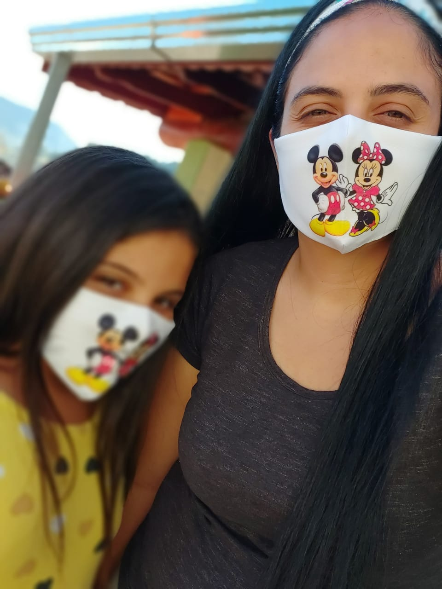
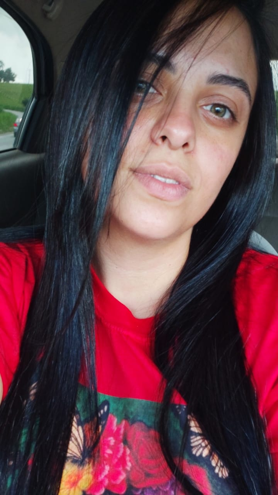

Moro na cidade de Senador José Bento, localizada no estado de Minas Gerais, mais precisamente no sul de Minas. Com a pandemia, minha mãe e eu resolvemos abrir um negócio próprio, então desde o ínicio da pandemia em 2020 começamos a fabricar máscaras, de ínicio faziamos apenas este tipo de produto, depois expandimos para fabricação de camisetas, aventais, agora no inverno moletom, pijamas.Todos personalizados a gosto do cliente,conseguimos nos reinventar mesmo em um momento dificil. Então em 2021 começei a estudar programação,através de uma bolsa de estudos da instituição Digital House juntamente com outros parceiros, como nada na vida vem fácil o começo dos estudos foram um tanto quanto dificéis,até que se aprende o ritmo e quanto de tempo se é necessário para estudar se dedicar para obter os resultados. No atual momento ainda não sei qual a área que quero me especializar,tenho uma queda por progração imperativa, mais front end me enche os olhos também.
 Na área de tecnologia até o momento a experiência é pouco, tenho outras experiências de outros serviços como tecnica de laboratório, frentista em posto de gasolina e costureira.
https://github.com/YasminTrentini/Programa-o-Imperativa.git
https://github.com/YasminTrentini/Front-End.git
https://github.com/FernandoMelloDH/aula04_turma01.git
Endereço: Rua número 1
Cidade: Senador José Bento
Telefone: 3598674895
Github: Yasmin Trentini
Linkedin: Yasmin Fernandes Trentini
Ir para Contatos